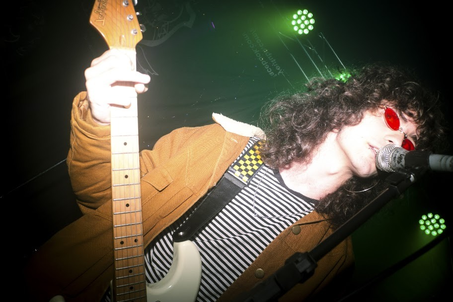

01Zerinho
Vocalista / Guitarrista
minhas maiores inspirações musicais são artistas da década de 60/70, como jimi hendrix, led zeppelin, rolling stones, the doors, os mutantes, the zombies, jefferson airplane, entre outros grupos que faziam som psicodélico como guitarrista, sou extremamente influenciado pelo blues e pela improvisação, gosto de estender as músicas e criar coisas novas sempre que toco. e como vocalista o foco é mais em procurar melodias interessantes e menos na técnica vocal a respeito das letras, não faço questão de escrever músicas poéticas ou que tenha um significado profundo